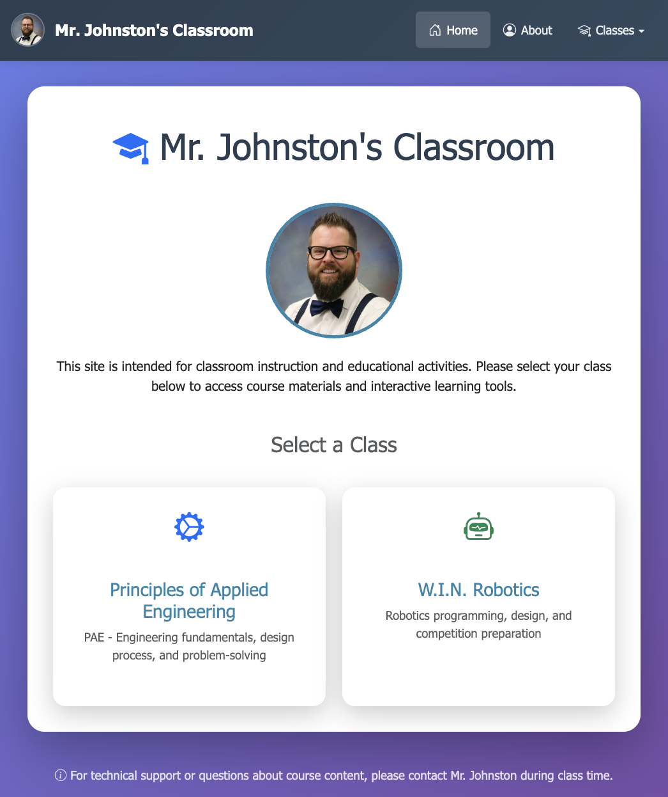
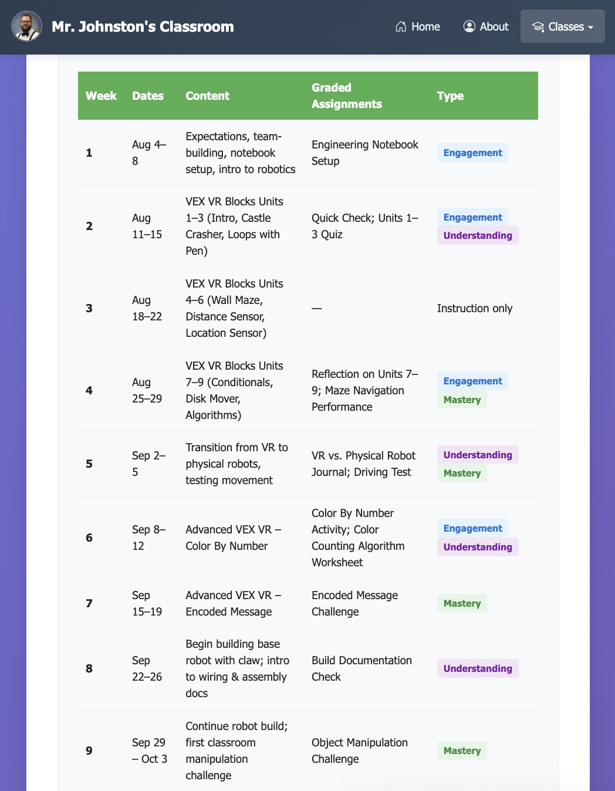
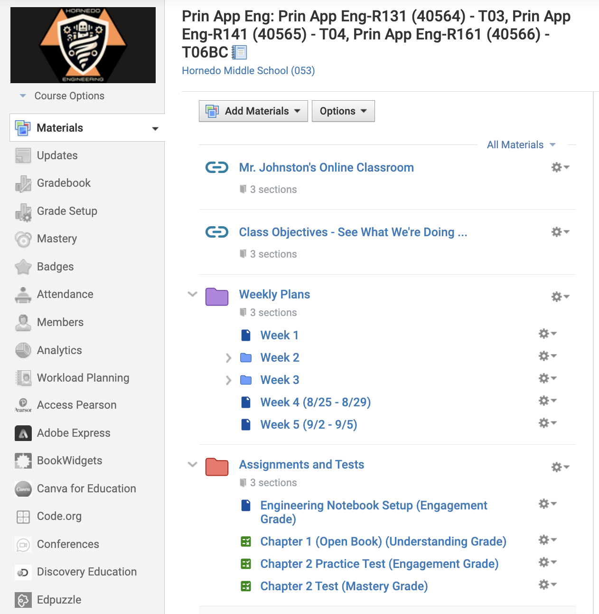
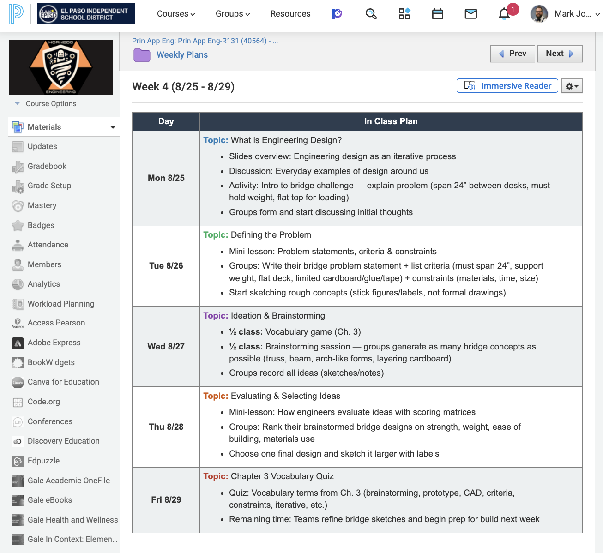
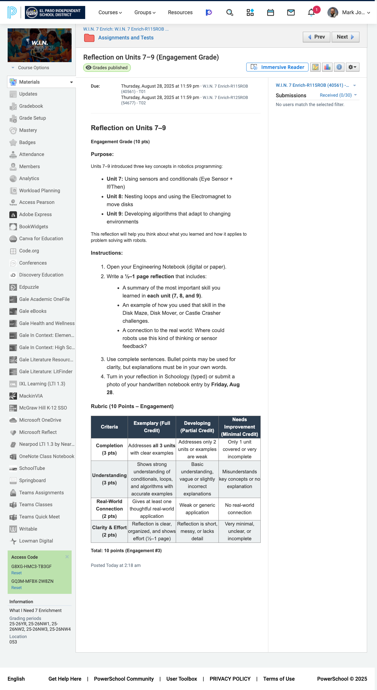

---
---
Welcome — How My Courses Are Organized
{% include navigation.html %}
Welcome — How My Courses Are Organized
Mr. Johnston's Classroom
Welcome to Our Engineering Community!
Dear Parents and Guardians,
Thank you for entrusting me with your student's engineering education. I apologize for not sending this welcome message sooner—the first week was dedicated to ensuring every student felt comfortable and ready to succeed in our hands-on learning environment. Your patience while we established our classroom routines and procedures is greatly appreciated.
I'm excited to partner with you this year as we guide your student through an engaging journey of discovery, creativity, and real-world problem-solving. Your involvement and support make all the difference in their success!
About Me
I'm Mr. Johnston, and I have the privilege of teaching Principles of Applied Engineering and W.I.N. Robotics at Hornedo. With years of experience in both industry and education, I've developed a teaching philosophy centered on hands-on learning, clear expectations, and real-world engineering applications. I believe every student has the potential to think like an engineer, and my role is to nurture that potential through structured guidance and encouragement.
In my classroom, your student will experience a carefully crafted curriculum that balances challenge with support. They'll practice design thinking, build and iterate on prototypes, document their engineering process, and learn to communicate their ideas professionally—skills that will serve them well in any future career path. I maintain consistent routines and clear expectations, which helps students feel secure and confident as they tackle new challenges.
Rest assured that your student is in a supportive environment where mistakes are viewed as learning opportunities, creativity is celebrated, and every achievement—big or small—is recognized. I maintain high standards while providing the scaffolding students need to reach them successfully.
Where can I find more information about the class?
I've designed my classroom website to be your central hub for understanding what your student is learning and how they're progressing. Everything is organized intuitively, making it easy for you to stay connected with their educational journey. The website is regularly updated with current assignments, project showcases, and important announcements, ensuring you're always informed about classroom activities.
To get started, simply visit my classroom website and select the course card that matches your student's class. I've included detailed screenshots below to guide you through the navigation process. You'll notice that items are clearly marked: those with a a badge indicate the Principles of Applied Engineering path, while those with a b badge show the W.I.N. Robotics path. This color-coding system makes it simple to find exactly what you need.
1Go to the main site and select the class.

Screenshot 1. Main site with two class options.
3Look over the scope, sequence, and graded work types.

Screenshot 4. Example week view with graded assignment types.
Understanding Schoology: Your Window into Daily Learning
While my public website provides the big picture, Schoology is where the day-to-day magic happens. This is our secure learning management system where students access assignments, submit work, and receive personalized feedback. I've structured everything in Schoology with clarity and consistency in mind—you'll find organized folders for Weekly Plans, clearly labeled assignment sections, and detailed rubrics for every project.
I believe in complete transparency with families, which is why I encourage you to ask your student to show you their Schoology account regularly. When you look together, you'll see that every assignment comes with step-by-step instructions, clear expectations, and rubrics that eliminate guesswork. This structure helps students develop independence while ensuring they always know what success looks like. The consistent organization also means your student can easily find resources when they need them, reducing stress and promoting confidence.
Below are screenshots from the student view so you know exactly what your child sees when they log in. Notice how everything is thoughtfully organized—this isn't by accident. This careful structure helps students develop executive functioning skills that will benefit them throughout their academic career and beyond.

Screenshot 5. Student course landing in Schoology—notice the organized structure that helps students stay on track.

Screenshot 6. Weekly Plans folder layout—everything your student needs for the week in one organized location.

Screenshot 7. A sample assignment showing clear instructions and detailed rubric—no surprises, just clear expectations.
Quick Summary for Busy Parents:
Public Website: Your go-to resource for course overview, curriculum scope, learning objectives, and seeing the exciting projects your student will create
Schoology: The daily hub for assignments, submissions, detailed feedback, grades, and direct communication with me
Both platforms work together to create a comprehensive learning experience that keeps everyone—students, parents, and teacher—connected and informed
Let's Stay Connected
Your involvement in your student's education is invaluable, and I'm here to support both you and your child every step of the way. Whether you have questions about assignments, want to understand a concept your student is learning, or simply want to share your child's excitement about a project, I welcome your communication. Together, we can ensure your student has an enriching, confidence-building experience in engineering and robotics.
I typically respond to emails within 24 hours during the school week, and I'm always happy to schedule phone calls or meetings if you'd prefer to discuss your student's progress in more detail. Don't hesitate to reach out—no question is too small, and your engagement makes a tremendous difference in your student's success.
Contact Information:
Email: majohnst@episd.org
Best times to reach me: 7:30 AM - 4:30 PM on school days
Thank you for being an active partner in your student's engineering journey. Your support and encouragement at home amplifies everything we do in the classroom, and I'm honored to work with your family this year.